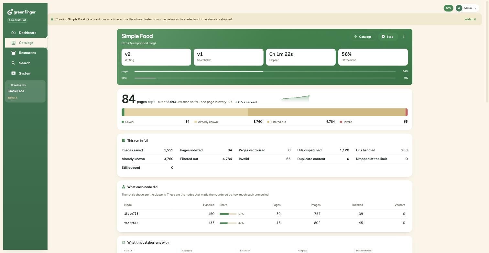
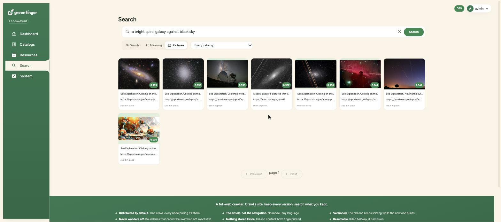

Greenfinger is a distributed web crawler for the JVM. Point it at a url and it crawls the whole site, keeps every page, every picture and every version, and writes plain files, a full text index and a vector collection in one pass. Every node runs the same jar, so there is no coordinator to deploy and nothing to provision before the first crawl.
Greenfinger = a crawler that never leaves the site + three outputs that stack + search by words, by meaning, or by describing a picture.

A rebuild in progress. v1 keeps answering searches while v2 is being written, and each node reports what it pulled.
Most crawler code starts as a hundred lines around an http client and works. These are the five things that arrive next.
One advert link, one external share button, and an unbounded crawler is downloading the rest of the internet.
Two boundary rules that cannot be switched off.Doubling the speed means a queue, a scheduler, a lock, and a week of work that has nothing to do with the site you wanted.
Every node runs the same jar and pulls its own share.The process was killed at page 40,000 and the queue was in memory.
The frontier is on disk, so a resume carries on.Navigation, sidebars and cookie banners get indexed alongside the article, so every result looks the same.
Boilerplate dropped by link density, in any language.Files here, an index there, embeddings somewhere else, and three pieces of glue that each fail differently.
One pass writes all three, and any of them rebuilds from the files.No database, no search server, no API key and no model download before the first crawl. H2 and an embedded Lucene index are the defaults, and the embedding models run as ONNX inside the crawler's own process.
One url dispatched is one call to whichever node owns it. No central queue, no scheduler, no leader in the fetch path.
Point another one at the same cluster name and it joins a crawl that is already running. Kill one and the crawl carries on.
Files on disk or in MinIO, an index in Lucene or Elasticsearch, vectors in Lucene, Qdrant, Weaviate or Elasticsearch.
The index and the vectors rebuild from the files. A lost index or a changed analyzer never means touching the site again.
The registrable domain has to match and every url has to sit under the start url. Neither rule can be switched off. robots.txt on top.
Pictures from <img>, srcset and og:image.
Document links recorded on every crawl, with pdf one bean away.
A crawl killed halfway carries on. A rebuild opens a new version beside the old one, which keeps answering searches until it finishes.
By words, by meaning, and by describing a picture you remember. The embedding models run locally and need no account.
Fifteen interfaces, each with a shipped default that is
@ConditionalOnMissingBean. Publish a bean and yours wins.
One crawl writes three places at once. The file layer is always on, because the database keeps
metadata only and the other two rebuild from what it wrote. That is the whole reason
replay can exist, and it is why search never has to read the database.
// one pass, three outputs
┌─────────────┐
│ file │ disk, MinIO, S3
one crawl ────► ├─────────────┤
│ index │ Lucene, ES
├─────────────┤
│ vector │ Lucene, Qdrant,
│ │ Weaviate, ES
└─────────────┘
│
replay ──────────┘ rebuild from the files,
without fetching again
// the cluster, fork without join
node A ── finds /a/b ──► node C owns it
│
fetches, finds /a/b/c
│
──► node A owns it ──► ...
no central queue
no leader in the fetch path
join or leave mid crawl
A crawl is a recursive function, and distribution only makes the recursive call cross a process. There is no join, because a parent page does not care what its children found. Finishing is decided from shared counters that every node can read, so a leader that dies mid crawl cannot leave a crawl that never ends.
The crawler needs nothing else running. Metadata goes into an H2 file, pages go under
./data, and a live dashboard is drawn while it works. First crawl in about
five minutes, most of which is Maven.
# clone and build git clone https://github.com/paganini2008/greenfinger cd greenfinger/backend && mvn clean install # crawl a site, right now cd ../deploy ./greenfinger-cli.sh --cluster=demo crawl \ --url=https://books.toscrape.com # or bring up the nodes and the console ./run-local.sh # http://localhost:9700 GF_NODES=3 ./run-local.sh # three nodes, one crawl # a terminal on those nodes ./greenfinger-shell.sh --cluster=greenfinger-local
Three things people actually do with it.
Exact terms, highlighted, with detail pages ranked above listings. Deep paging by cursor, past the ten thousandth result Elasticsearch refuses.
breadFinds the page that answers the question even when it never uses the words. The top answer to this one is a supernova remnants page that never contains the sentence.
what happens when a star runs out of fuelMatched against the picture itself, not the filename and not the alt text.
a bright spiral galaxy against black sky
Pictures, ranked by how well each one matches the description.
// Rebuild an output without crawling again. // Elasticsearch was down, or the analyzer changed, // or you decided late that you want embeddings. ./greenfinger-cli.sh --cluster=nightly replay \ --id=<id> --layers=index+vector
// Teach it a new file format. Every default is // @ConditionalOnMissingBean, so a bean is the // whole registration. @Bean DocumentContentParser pdfParser() { return new DocumentContentParser() { public Set<String> fileTypes() { return Set.of("pdf"); } // ... extractText(byte[], url, charset) }; }
Every verb, every prompt command and every seam is in the command line reference and the developer guide.
Our own numbers only. There is no comparison here against other crawlers, because we have not run the controlled experiment that would make one honest.
run-local.sh, each -Xms256m -Xmx2g. H2 file, embedded
Lucene index, embedded Lucene vector store, pages and images on local disk, local ONNX
embeddings. Home broadband. Polite crawling, so fetchInterval is the floor on throughput
rather than the hardware.
The gap between urls seen and pages kept is the point rather than an inefficiency. On simplefood 22,340 urls were filtered out by the boundary rules and 561 were duplicate content, which is work the outputs never had to do.
On three nodes against a 61 page site with one shared PostgreSQL: 61 dispatched, 61 saved, each page fetched exactly once.
| Measurement | Result |
|---|---|
| Word search, embedded Lucene over 151 documents | 38 matches in 16 ms |
Cluster wire format, one CrawlTask | JSON 327 bytes, 1,394 ns |
| Both ONNX models preloaded, on a background thread | 4.47 s |
| Idle RSS with both models loaded | 1.77 to 1.88 GB |
| Image vector duplication, before and after the fix | 43× then 1.00× |
| Backend tests, with an 80% line coverage gate | 133 classes, 1,098 methods |
| Schema scripts, executed against real empty databases | 6 of 6 pass |
Reference for operators, and the seams for developers.
Build, crawl a site in one command, bring up the nodes and the console.
ExamplesEvery verb, driving a cluster from the prompt, deleting what a crawl produced, adding a parser, embedding the api.
ConfigurationWhat a catalog takes, and the node wide defaults in .env, as tables with
every default spelled out.
The crawl verbs, every command at the prompt, and how a terminal attaches to a cluster.
API referenceEvery seam, what ships behind it, and how to put your own there. Extractors, filters, outputs, stores and document parsers.
ArchitectureHow the system is shaped and why, with diagrams and the numbers the decisions were made on.
Also: the full write up with screenshots and the schema scripts, one per database.
Apache 2.0. Issues and pull requests are welcome, and a change has to pass
mvn -o clean verify, which fails the build below 80% line coverage.